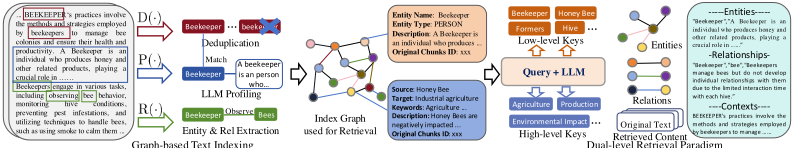
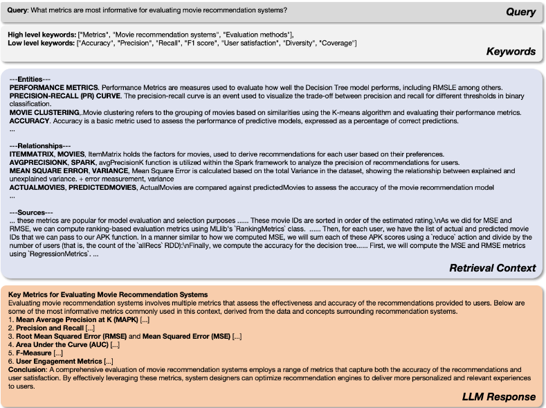
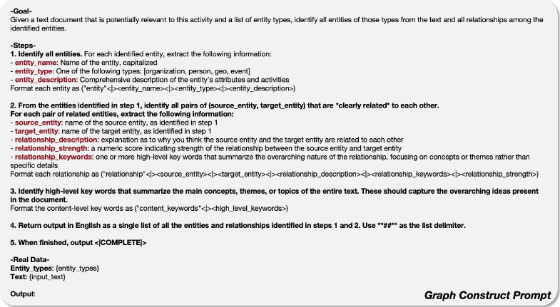
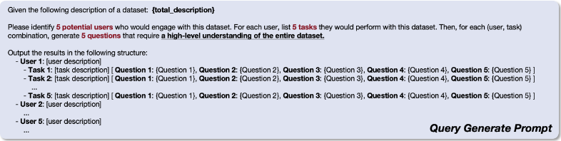
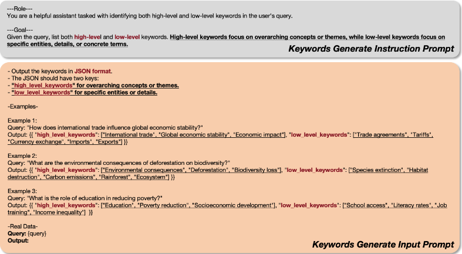
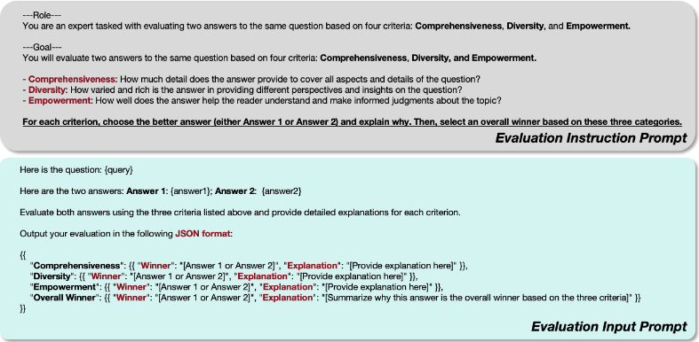

LightRAG：简单快速的检索增强生成（RAG）
现有 RAG 系统依赖扁平的文本块表示、缺乏跨实体的上下文关联，面对涉及多重依赖的复杂问题容易产出碎片化回答。LightRAG 将图结构引入文本索引与检索：先用 LLM 从文档块中抽取实体与关系构建知识图谱，再通过双层检索范式（low-level 针对具体实体与关系、high-level 针对更广泛的主题）结合向量表示实现高效检索，并支持通过节点/边集并集做增量更新而无需全量重建。在 UltraDomain 的 Agriculture、CS、Legal、Mix 四个数据集上，LightRAG 在 Comprehensiveness、Diversity、Empowerment、Overall 四个维度的胜率全面领先 NaiveRAG、HyDE、RQRAG、GraphRAG 等基线，Legal 数据集上基线胜率仅约 20%；检索阶段仅需不到 100 token 与 1 次 API 调用，远低于 GraphRAG 的 61 万 token 与数百次调用。对团队而言，这是知识库问答与上下文组织方向可直接参考落地的图增强 RAG 方案。
现有 RAG 系统存在两大局限：一是依赖扁平数据表示，无法基于实体间复杂关系进行理解与检索；二是缺乏上下文感知，难以跨实体保持连贯，导致多源信息无法综合成完整回答。此外，已有的图结构方法（如 GraphRAG）缺乏知识图谱的动态更新能力，且基于社区遍历的暴力检索在大规模查询下效率低下。论文围绕三个挑战展开：全面的信息检索、更高的检索效率、对新数据的快速适应。
LightRAG 由三部分组成：(1) 基于图的文本索引：将文档分块后用 LLM 抽取实体（名称、日期、地点、事件等）及关系，构建知识图谱并生成键值数据结构，附录给出了图生成、查询生成、关键词抽取的 prompt 模板；(2) 双层检索范式：low-level 检索聚焦具体实体及其关系，high-level 检索覆盖更广泛的主题与概念，通过图结构与向量表示结合、利用局部与全局关键词匹配，直接检索实体和关系而非 chunk；(3) 增量更新算法：新文档按相同索引流程处理后，将新图的节点集与边集同原图做并集合并，无需重建整个索引图。答案生成阶段将检索到的实体/关系描述与原文片段拼接后交给通用 LLM 生成回答。
在最大的 Legal 数据集（5,081,069 token）上，基线方法相对 LightRAG 的胜率仅约 20%，且语料规模越大图增强 RAG 优势越明显
LightRAG 在 Agriculture、CS、Legal 等百万级 token 数据集上全面超越 GraphRAG，并在 Diversity 维度优势显著
检索阶段成本对比：GraphRAG 消耗 610,000 token（610 个 level-2 社区 × 平均 1,000 token）且需数百次 API 调用；LightRAG 关键词生成与检索仅需不到 100 token、单次 API 调用
增量更新成本对比：新增同规模数据时 GraphRAG 需约 1,399 × 2 × 5,000 token 重建社区报告；LightRAG 通过节点/边集并集直接合并，开销显著更低
消融实验：去除原文检索的 -Origin 变体在四个数据集上无显著性能下降，在 Agriculture 和 Mix 上甚至有所提升，作者归因于图索引已提取关键信息、原文反而引入噪声
实验设置：4 个数据集各生成 125 个问题，使用 GPT-4o-mini 作为系统与评判 LLM，nano vector database，chunk size 1200，gleaning 参数为 1
相比依赖扁平 chunk 表示与 top-k 向量检索的 NaiveRAG、HyDE、RQRAG 等方法，LightRAG 用 LLM 抽取实体关系构建知识图谱以捕捉多跳依赖；相比同样使用图结构的 GraphRAG，其区别在于：(1) 以双层检索（实体级 + 主题级）替代基于社区报告遍历的检索，直接检索实体与关系，大幅降低 token 与 API 调用开销；(2) 支持增量更新，新数据通过节点/边集并集合并进现有图谱，而 GraphRAG 需拆解并完全重建社区结构；(3) 将图结构与向量表示结合，兼顾检索效率与结果全面性。
相关度级别：high
命中能力域：3.1 上下文工程与记忆 | 3.5 评测与可靠使用
理由：直接命中 3.1 上下文工程与记忆域：论文核心就是 RAG/检索增强与结构化上下文组织，其图索引 + 双层检索 + 增量更新正是面向生产系统的上下文管理方案，与团队的知识库问答场景直接对应；同时其 LLM-as-judge 四维对比评测方法（Comprehensiveness/Diversity/Empowerment/Overall + 胜率统计）与 token/API 调用成本量化分析，对 3.5 评测与可靠使用域（评测方法、成本与效率优化）有直接借鉴价值。论文不涉及模型训练，与团队'用好模型而非训练模型'的定位完全一致。
建议动作：深入精读并做内部分享
arXiv:2410.05779v3 [cs.IR] 2025年4月28日
Zirui Guo 1 , 2 , Lianghao Xia 2 , Yanhua Yu 1 , ∗ , Tu Ao 1 , Chao Huang 2
北京邮电大学
香港大学
∗ 1 2
zrguo101@hku.hk aka_xia@foxmail.com chaohuang75@gmail.com
检索增强生成（Retrieval-Augmented Generation, RAG）系统通过整合外部知识源来增强大语言模型（LLM），使其能够生成更准确、更贴合上下文且满足用户需求的回答。然而，现有 RAG 系统存在显著局限，包括依赖扁平化的数据表示以及上下文感知能力不足，这可能导致答案碎片化，无法捕捉复杂的相互依赖关系。为应对这些挑战，我们提出了 LightRAG，它将图结构融入文本索引与检索过程。这一创新框架采用双层检索系统，从低层和高层知识发现两个层面增强全面的信息检索。此外，图结构与向量表示的结合有助于高效检索相关实体及其关系，在保持上下文相关性的同时显著缩短响应时间。增量更新算法进一步增强了这一能力，确保新数据能够及时融入，使系统在快速变化的数据环境中保持有效与敏捷。大量实验验证表明，与现有方法相比，LightRAG 在检索准确性和效率方面均有显著提升。我们已将 LightRAG 开源，发布于以下链接：https://github.com/HKUDS/LightRAG 。
检索增强生成（Retrieval-Augmented Generation, RAG）系统旨在通过整合外部知识源来增强大型语言模型（Large Language Models, LLMs）Sudhi et al. (2024); Es et al. (2024); Salemi & Zamani (2024)。这种创新的结合方式使 LLM 能够生成更准确、更具上下文相关性的回答，显著提升了其在实际应用中的实用性。通过适配特定领域的知识 Tu et al. (2024)，RAG 系统确保所提供的信息不仅切题，而且能够贴合用户的需求。此外，它们还能提供对最新信息的访问 Zhao et al. (2024)，这在快速演变的领域中至关重要。分块（chunking）在支撑检索增强生成过程中发挥着至关重要的作用 Lyu et al. (2024)。通过将大型外部文本语料库分解为更小、更易于管理的片段，分块显著提高了信息检索的准确性。这种方法支持更有针对性的相似性搜索，确保检索到的内容与用户查询直接相关。
然而，现有的 RAG 系统存在一些制约其性能的关键局限。首先，许多方法依赖于扁平化的数据表示，限制了它们基于实体之间复杂关系来理解和检索信息的能力。其次，这些系统往往缺乏在多个实体及其相互关系之间保持连贯性所需的上下文感知能力，导致其回答可能无法充分回应用户的查询。例如，假设用户提问：“电动汽车的兴起如何影响城市空气质量与公共交通基础设施？”现有的 RAG 方法可能会分别检索到关于电动汽车、空气污染和公共交通难题的独立文档，却难以将这些信息综合成一个连贯的回答。它们可能无法解释电动汽车的普及如何改善空气质量，而空气质量的改善又可能反过来影响公共交通规划。其结果是，用户得到的可能是一个支离破碎的答案，未能充分体现这些主题之间复杂的相互依赖关系。
∗ Chao Huang 与 Yanhua Yu 均为通讯作者。
1
为了解决上述局限性，我们提出将图结构引入文本索引与相关信息检索之中。图结构在表示不同实体之间相互依赖关系方面尤为有效 Rampášek et al. (2022)，从而能够对关系形成更细致入微的理解。基于图的知识结构的融入，有助于将来自多个来源的信息综合成连贯且上下文丰富的回答。尽管具备这些优势，开发一个能够高效处理不同查询规模的快速且可扩展的图增强检索增强生成（RAG）系统仍然至关重要。在本工作中，我们通过解决三个关键挑战，构建了一个有效且高效的 RAG 系统：i) 全面的信息检索。确保全面的信息检索能够从所有文档中捕捉相互依赖实体的完整上下文；ii) 提升检索效率。提高基于图的知识结构上的检索效率，以显著缩短响应时间；iii) 快速适应新数据。支持对新数据更新的快速适应，确保系统在动态环境中保持相关性。
针对上述挑战，我们提出了 LightRAG，该模型将基于图的文本索引范式与双层检索框架无缝集成。这一创新方法增强了系统捕捉实体间复杂相互依赖关系的能力，从而产生更连贯、上下文更丰富的回答。LightRAG 采用高效的双层检索策略：低层检索聚焦于特定实体及其关系的精确信息，高层检索则涵盖更广泛的主题与议题。通过结合细节层面与概念层面的检索，LightRAG 能够有效应对多样化的查询，确保用户获得贴合其具体需求的相关且全面的回答。此外，通过将图结构与向量表示相集成，我们的框架能够高效检索相关实体与关系，同时借助所构建知识图谱中的相关结构信息提升结果的全面性。
综上所述，本工作的主要贡献总结如下：
检索增强生成（Retrieval-Augmented Generation, RAG）将用户查询与源自外部知识数据库的相关文档集合相集成，包含两个核心要素：检索组件与生成组件。1）检索组件负责从外部知识数据库中获取相关文档或信息，它基于输入查询识别并检索出最相关的数据。2）在检索过程完成后，生成组件利用检索到的信息生成连贯且与上下文相关的回答，它借助语言模型的能力来产生有意义的输出。形式化地，该 RAG 框架（记为 M）可定义如下：
在该框架中，G 和 R 分别表示生成模块与检索模块，q 表示输入查询，D 指外部数据库。检索模块 R
2

基于图的文本索引 双层检索范式
包含两个关键功能：i) 数据索引器 φ ( · )：即基于外部数据库 D 构建特定的数据结构 ˆ D。ii) 数据检索器 ψ ( · )：通过将查询与索引后的数据进行比对来获得相关文档，这些文档也被称为“相关文档”。通过利用经由 ψ ( · ) 检索到的信息以及初始查询 q，生成模型 G ( · ) 能够高效地产生高质量、与上下文相关的回答。
在本工作中，我们聚焦于对构建高效且有效的 RAG 系统至关重要的若干关键要点，具体阐述如下：
图增强的实体与关系抽取。我们的 LightRAG 通过将文档分割为更小、更易于管理的片段来增强检索系统。这一策略使得无需分析整个文档即可快速识别并访问相关信息。接下来，我们利用大语言模型（LLMs）来识别并抽取各类实体（例如姓名、日期、地点和事件）以及它们之间的关系。通过这一过程收集到的信息将被用于构建一个全面的知识图谱，该图谱突出展示了整个文档集合中的关联与洞见。我们将这一图生成模块形式化地表示如下：
其中 ˆ D 表示所生成的知识图谱。为了生成这些数据，我们对原始文本文档 D i 应用三个主要处理步骤。这些步骤利用 LLM 进行文本分析与处理。关于该部分的提示模板和具体设置的详细信息可参见附录 7.3.2。我们基于图的文本索引范式中所使用的函数描述如下：
3
原始文本 D i 。该过程通过最小化图的规模，有效降低了在 ˆ D 上进行图操作所带来的开销，从而实现更高效的数据处理。
我们的 LightRAG 通过其基于图的文本索引范式提供了两大优势。第一，全面的信息理解。所构建的图结构能够从多跳子图中抽取全局信息，极大增强了 LightRAG 处理跨越多个文档块的复杂查询的能力。第二，更优的检索性能。由图导出的键值数据结构经过优化，可实现快速而精确的检索。这为现有方法中常用的精度较低的嵌入匹配方法（Gao et al., 2023）以及低效的文档块遍历技术（Edge et al., 2024）提供了一种更优的替代方案。
对增量知识库的快速适应。为了在确保回答准确且相关的同时高效适应不断变化的数据更新，我们的 LightRAG 以增量方式更新知识库，而无需对整个外部数据库进行完整的重新处理。对于新文档 D ′，增量更新算法使用与之前相同的基于图的索引步骤 φ 对其进行处理，得到 ˆ D ′ = ( ˆ V ′ , ˆ E ′ )。随后，LightRAG 通过对节点集 ˆ V 与 ˆ V ′ 以及边集 ˆ E 与 ˆ E ′ 取并集，将新的图数据与原始图数据合并。
两个关键目标指导我们针对增量知识库的快速适应方法：新数据的无缝集成。通过对新信息应用一致的方法论，增量更新模块使 LightRAG 能够在不破坏现有图结构的情况下集成新的外部数据库。这种方法保留了已建立连接的完整性，确保历史数据保持可访问，同时在不产生冲突或冗余的情况下丰富图结构。降低计算开销。通过消除重建整个索引图的需要，该方法降低了计算开销，并促进了新数据的快速吸收。因此，LightRAG 保持了系统准确性，提供了最新信息，并节约了资源，确保用户获得及时更新，并提升了整体 RAG 有效性。
为了从具体的文档块及其复杂的相互依赖关系中检索相关信息，我们的 LightRAG 提出在细节和抽象两个层级上生成查询键（query keys）。
为了适应多样化的查询类型，LightRAG 在双层检索范式（dual-level retrieval paradigm）中采用了两种不同的检索策略。这确保了具体查询和抽象查询都能得到有效处理，使系统能够提供针对用户需求量身定制的相关响应。
集成图与向量以实现高效检索。通过将图结构与向量表示相结合，模型能够更深入地洞察实体之间的相互关系。这种协同作用使检索算法能够有效利用局部关键词和全局关键词，从而简化搜索过程并提高结果的相关性。
4
这种双层检索范式不仅通过关键词匹配促进了对相关实体和关系的高效检索，还通过整合所构建知识图谱中的相关结构信息，增强了结果的全面性。
检索信息的利用。利用检索到的信息 ψ ( q ; ˆ D )，我们的 LightRAG 采用通用大语言模型（LLM）基于所收集的数据生成答案。这些数据由剖析函数 P ( · ) 生成的相关实体和关系的拼接值 V 组成。其中包括实体和关系的名称与描述，以及原始文本的摘录。
上下文整合与答案生成。通过将查询与这一多源文本统一起来，LLM 生成针对用户需求量身定制、信息丰富的答案，确保与查询意图保持一致。这种方法通过将上下文和查询同时整合到 LLM 模型中，简化了答案生成过程，如详细示例（附录 7.2）所示。
在本节中，我们分析所提出的 LightRAG 框架的复杂度，该框架可分为两个主要部分。第一部分是基于图的索引（Index）阶段。在此阶段，我们使用大语言模型（LLM）从每个文本块中抽取实体和关系。因此，LLM 需要被调用 total tokens chunk size 次。重要的是，这一过程不涉及任何额外开销，使得我们的方法在管理新文本更新方面非常高效。
该过程的第二部分涉及基于图的检索阶段。对于每个查询，我们首先利用 LLM 生成相关关键词。与当前的检索增强生成（RAG）系统 Gao et al. (2023; 2022); Chan et al. (2024) 类似，我们的检索机制依赖于基于向量的搜索。然而，与传统 RAG 中检索文本块的做法不同，我们专注于检索实体和关系。与 GraphRAG 中使用的基于社区的遍历方法相比，这种方法显著降低了检索开销。
我们在基准测试（benchmark）数据上开展实证评估，通过回答以下研究问题来检验所提出的 LightRAG 框架的有效性：
· (RQ1)：在生成性能方面，LightRAG 与现有 RAG 基线方法相比表现如何？
· (RQ2)：双层检索与基于图的索引如何提升 LightRAG 的生成质量？
· (RQ3)：在各种场景的案例示例中，LightRAG 展现了哪些具体优势？
· (RQ4)：LightRAG 的相关成本如何？其对数据变化的适应性又如何？
评估数据集。为了对 LightRAG 进行全面分析，我们从 UltraDomain 基准测试（Qian et al., 2024）中选取了四个数据集。UltraDomain 数据来源于 428 本大学教材，涵盖包括农业、社会科学和人文学科在内的 18 个不同领域。我们从中选择了 Agriculture、CS、Legal 和 Mix 四个数据集。每个数据集包含 600,000 至 5,000,000 个 token，详细信息见表 4。以下是对我们实验中所使用的四个领域的具体介绍：
5
问题生成。为了评估 RAG 系统在高层次意义建构（sensemaking）任务上的有效性，我们将每个数据集的全部文本内容整合为上下文，并采用 Edge et al. (2024) 中概述的生成方法。具体而言，我们指示一个大语言模型（LLM）生成五个 RAG 用户，并为每个用户生成五个任务。每个生成的用户都附有一段文字描述，详细说明其专业知识与特质，而这些正是驱动其提问活动的因素。每个用户任务同样配有描述，着重体现用户在与 RAG 系统交互时的一种潜在意图。对于每个用户-任务组合，LLM 会生成五个需要理解整个语料库的问题。总计，这一过程为每个数据集生成了 125 个问题。
基线方法。LightRAG 在所有数据集上与以下最先进方法进行比较：
实现与评估细节。在实验中，我们使用 nano vector database 进行向量数据的管理与访问。对于 LightRAG 中所有基于 LLM 的操作，我们默认使用 GPT-4o-mini。为确保一致性，所有数据集的分块大小（chunk size）均设置为 1200。此外，GraphRAG 和 LightRAG 的 gleaning 参数均固定为 1。
为许多 RAG 查询（尤其是那些涉及复杂高层语义的查询）定义真值（ground truth）面临重大挑战。为解决这一问题，我们在现有工作 (Edge et al., 2024) 的基础上，采用了一种基于 LLM 的多维度比较方法。我们采用一个强大的 LLM（具体为 GPT-4o-mini）将每个基线方法与我们的 LightRAG 进行对比排序。我们所使用的评估提示词详见附录 7.3.4。我们总共采用以下四个评估维度：
i) 全面性（Comprehensiveness）：答案在多大程度上全面涵盖了问题的各个方面与细节？ ii) 多样性（Diversity）：答案在提供与问题相关的不同视角和见解方面有多丰富多样？ iii) 赋能性（Empowerment）：答案在帮助读者理解该主题并做出明智判断方面的效果如何？ iv) 总体（Overall）：该维度综合评估上述三项标准的累计表现，以选出整体最佳的答案。
大语言模型（LLM）会针对每个维度直接比较两个答案，并按每项标准选出更优的回答。在确定三个维度各自的胜出答案后，LLM 会综合这些结果来判定整体上更优的答案。为确保评估公平，并缓解答案在提示（prompt）中的呈现顺序可能带来的潜在偏差，我们交替调换每个答案的位置。我们据此计算胜率，从而得出最终结果。
我们在多个评估维度和数据集上将 LightRAG 与各个基线方法进行了比较。结果如表 1 所示。基于这些发现，我们得出以下结论：
6
| Agriculture.NaiveRAG | Agriculture.LightRAG | CS.NaiveRAG | CS.LightRAG | Legal.NaiveRAG | Legal.LightRAG | Mix.NaiveRAG | Mix.LightRAG | |
|---|---|---|---|---|---|---|---|---|
| Comprehensiveness | 32.4% | 67.6% | 38.4% | 61.6% | 16.4% | 83.6% | 38.8% | 61.2% |
| Diversity | 23.6% | 76.4% | 38.0% | 62.0% | 13.6% | 86.4% | 32.4% | 67.6% |
| Empowerment | 32.4% | 67.6% | 38.8% | 61.2% | 16.4% | 83.6% | 42.8% | 57.2% |
| Overall | 32.4% | 67.6% | 38.8% | 61.2% | 15.2% | 84.8% | 40.0% | 60.0% |
| RQ-RAG | LightRAG | RQ-RAG | LightRAG | RQ-RAG | LightRAG | RQ-RAG | LightRAG | |
| Comprehensiveness | 31.6% | 68.4% | 38.8% | 61.2% | 15.2% | 84.8% | 39.2% | 60.8% |
| Diversity | 29.2% | 70.8% | 39.2% | 60.8% | 11.6% | 88.4% | 30.8% | 69.2% |
| Empowerment | 31.6% | 68.4% | 36.4% | 63.6% | 15.2% | 84.8% | 42.4% | 57.6% |
| Overall | 32.4% | 67.6% | 38.0% | 62.0% | 14.4% | 85.6% | 40.0% | 60.0% |
| HyDE | LightRAG | HyDE | LightRAG | HyDE | LightRAG | HyDE | LightRAG | |
| Comprehensiveness | 26.0% | 74.0% | 41.6% | 58.4% | 26.8% | 73.2% | 40.4% | 59.6% |
| Diversity | 24.0% | 76.0% | 38.8% | 61.2% | 20.0% | 80.0% | 32.4% | 67.6% |
| Empowerment | 25.2% | 74.8% | 40.8% | 59.2% | 26.0% | 74.0% | 46.0% | 54.0% |
| Overall | 24.8% | 75.2% | 41.6% | 58.4% | 26.4% | 73.6% | 42.4% | 57.6% |
| GraphRAG | LightRAG | GraphRAG | LightRAG | GraphRAG | LightRAG | GraphRAG | LightRAG | |
| Comprehensiveness | 45.6% | 54.4% | 48.4% | 51.6% | 48.4% | 51.6% | 50.4% | 49.6% |
| Diversity | 22.8% | 77.2% | 40.8% | 59.2% | 26.4% | 73.6% | 36.0% | 64.0% |
| Empowerment | 41.2% | 58.8% | 45.2% | 54.8% | 43.6% | 56.4% | 50.8% | 49.2% |
| Overall | 45.2% | 54.8% | 48.0% | 52.0% | 47.2% | 52.8% | 50.4% | 49.6% |
| | Agriculture.NaiveRAG | Agriculture.LightRAG | CS.NaiveRAG | CS.LightRAG | Legal.NaiveRAG | Legal.LightRAG | Mix.NaiveRAG | Mix.LightRAG |
图增强 RAG 系统在大规模语料库中的优越性 在处理大量 token 以及需要对数据集上下文有透彻理解的复杂查询时，LightRAG 和 GraphRAG 等基于图的 RAG 系统始终优于 NaiveRAG、HyDE 和 RQRAG 等纯粹基于分块（chunk）的检索方法。随着数据集规模的增大，这一性能差距变得尤为明显。例如，在最大的数据集（Legal）中，差距显著扩大，基线方法的胜率仅约为 20%，而 LightRAG 则占据主导地位。这一趋势凸显了图增强 RAG 系统在捕捉大规模语料库内复杂语义依赖方面的优势，有助于更全面地理解知识，并带来更优的泛化性能。
利用 LightRAG 增强回答多样性：与各种基线方法相比，LightRAG 在多样性（Diversity）指标上展现出显著优势，尤其是在规模较大的 Legal 数据集中。它在该方面的持续领先凸显了 LightRAG 在生成更广泛回答方面的有效性，特别是在需要多样化内容的场景中。我们将这一优势归因于 LightRAG 的双层检索范式，该范式支持从低层和高层两个维度进行全面的信息检索。这种方法有效地利用基于图的文本索引，在响应查询时持续捕捉完整的上下文。
LightRAG 相对于 GraphRAG 的优越性：虽然 LightRAG 和 GraphRAG 都采用基于图的检索机制，但 LightRAG 始终优于 GraphRAG，尤其是在具有复杂语言上下文的较大数据集中。在 Agriculture、CS 和 Legal 这三个各含数百万 token 的数据集中，LightRAG 展现出明显优势，显著超越 GraphRAG，凸显了其在多样化环境中全面理解信息方面的实力。
增强回答的多样性：通过将针对具体实体的低层检索与针对更广泛主题的高层检索相结合，LightRAG 提升了回答的多样性。这种双层机制能够有效应对细节性和抽象性查询，确保对信息的全面把握。复杂查询处理：这种方法在需要多元视角的场景中尤为有价值。通过同时获取具体细节和总体主题，LightRAG 能够娴熟地应对涉及相互关联主题的复杂查询，提供与上下文相关的答案。
我们还进行了消融研究，以评估双层检索范式的影响以及 LightRAG 中基于图的文本索引的有效性。结果如表 2 所示。
双层检索范式的有效性。我们首先分析低层检索范式与高层检索范式的作用。我们在四个数据集上将两个消融模型——各自省略一个模块——与 LightRAG 进行比较。以下是我们针对不同变体的关键观察：
7
| Agriculture.NaiveRAG | Agriculture.LightRAG | CS.NaiveRAG | CS.LightRAG | Legal.NaiveRAG | Legal.LightRAG | Mix.NaiveRAG | Mix.LightRAG | |
|---|---|---|---|---|---|---|---|---|
| Comprehensiveness | 32.4% | 67.6% | 38.4% | 61.6% | 16.4% | 83.6% | 38.8% | 61.2% |
| Diversity | 23.6% | 76.4% | 38.0% | 62.0% | 13.6% | 86.4% | 32.4% | 67.6% |
| Empowerment | 32.4% | 67.6% | 38.8% | 61.2% | 16.4% | 83.6% | 42.8% | 57.2% |
| Overall | 32.4% | 67.6% | 38.8% | 61.2% | 15.2% | 84.8% | 40.0% | 60.0% |
| NaiveRAG | -High | NaiveRAG | -High | NaiveRAG | -High | NaiveRAG | -High | |
| Comprehensiveness | 34.8% | 65.2% | 42.8% | 57.2% | 23.6% | 76.4% | 40.4% | 59.6% |
| Diversity | 27.2% | 72.8% | 36.8% | 63.2% | 16.8% | 83.2% | 36.0% | 64.0% |
| Empowerment | 36.0% | 64.0% | 42.4% | 57.6% | 22.8% | 77.2% | 47.6% | 52.4% |
| Overall | 35.2% | 64.8% | 44.0% | 56.0% | 22.0% | 78.0% | 42.4% | 57.6% |
| NaiveRAG | -Low | NaiveRAG | -Low | NaiveRAG | -Low | NaiveRAG | -Low | |
| Comprehensiveness | 36.0% | 64.0% | 43.2% | 56.8% | 19.2% | 80.8% | 36.0% | 64.0% |
| Diversity | 28.0% | 72.0% | 39.6% | 60.4% | 13.6% | 86.4% | 33.2% | 66.8% |
| Empowerment | 34.8% | 65.2% | 42.8% | 57.2% | 16.4% | 83.6% | 35.2% | 64.8% |
| Overall | 34.8% | 65.2% | 43.6% | 56.4% | 18.8% | 81.2% | 35.2% | 64.8% |
| NaiveRAG | -Origin | NaiveRAG | -Origin | NaiveRAG | -Origin | NaiveRAG | -Origin | |
| Comprehensiveness | 24.8% | 75.2% | 39.2% | 60.8% | 16.4% | 83.6% | 44.4% | 55.6% |
| Diversity | 26.4% | 73.6% | 44.8% | 55.2% | 14.4% | 85.6% | 25.6% | 74.4% |
| Empowerment | 32.0% | 68.0% | 43.2% | 56.8% | 17.2% | 82.8% | 45.2% | 54.8% |
| Overall | 25.6% | 74.4% | 39.2% | 60.8% | 15.6% | 84.4% | 44.4% | 55.6% |
| | Agriculture.NaiveRAG | Agriculture.LightRAG | CS.NaiveRAG | CS.LightRAG | Legal.NaiveRAG | Legal.LightRAG | Mix.NaiveRAG | Mix.LightRAG |
语义图在 RAG 中表现优异。我们在检索过程中去除了对原始文本的使用。令人惊讶的是，由此得到的变体 -Origin 在全部四个数据集上并未表现出显著的性能下降。在某些情况下，该变体甚至有所提升（例如在 Agriculture 和 Mix 上）。我们将这一现象归因于基于图的索引过程中对关键信息的有效提取，其能够为回答查询提供充分的上下文。此外，原始文本中往往包含无关信息，可能在回答中引入噪声。
为了在基线方法与我们的 LightRAG 之间提供清晰的对比，我们在表 3 中给出了具体的案例示例，其中包括竞争性基线 GraphRAG 与我们的 LightRAG 框架对同一机器学习问题的回答。在该实例中，LightRAG 在 LLM 评判所评估的所有维度上均表现更优，包括全面性、多样性、赋能性和整体质量。我们的主要观察如下：
i) 全面性。值得注意的是，LightRAG 覆盖了更广泛的机器学习指标，展示了其全面性以及有效发现相关信息的能力。这凸显了我们基于图的索引范式的优势，该范式在精确的实体与关系抽取以及 LLM 剖析（profiling）方面表现出色。ii) 多样性与赋能性。此外，LightRAG 不仅提供了更加多样化的信息，还给出了更具赋能性的内容。这一成功归功于 LightRAG 的分层检索范式，该范式将通过低层检索对相关实体进行深入探索以增强赋能性，与通过高层检索进行更广泛的探索以提升答案多样性相结合。这些方法共同捕捉了知识领域的全面全局视角，从而带来了更好的 RAG 性能。
8
| Query | Which methods can normalize the feature values for effective machine learning? |
|---|---|
| GraphRAG | Key Metrics for Evaluating Movie Recommendation Systems : Evaluating the effectiveness of movie recommendation systems is crucial for ensuring user satisfaction and improving the overall performance of these systems. Several metrics are widely recognized for their ability to provide insights into how well a recommendation system performs. Below are the most informative metrics: 1. Precision [...] 2. Recall [...] 3. F1 Score [...] 4. Mean Average Precision (MAP) [...] 5. Root Mean Squared Error (RMSE) [...] 6. User Satisfaction Metrics [...] Conclusion : In summary, metrics such as precision, recall, F1 score, MAP, RMSE, and user satisfaction are critical for evaluating the performance of movie recommendation systems. Each metric provides unique insights that can help developers and researchers refine their algorithms and enhance user experiences. By focusing on these metrics, stakeholders can ensure that their recommendation systems effectively meet user preferences and expectations. |
| LightRAG | Key Metrics for Evaluating Movie Recommendation Systems : Evaluating movie recommendation systems involves multiple metrics that assess the effectiveness and accuracy of the recommendations provided to users. Below are some of the most informative metrics commonly used in this context, derived from the data and concepts surrounding recommendation systems. 1. Mean Average Precision at K(MAPK) [...] 2. Precision and Recall [...] 3. Root Mean Squared Error (RMSE) and Mean Squared Error (MSE) [...] 4. Area Under the Curve (AUC) [...] 5. F-Measure [...] 6. User Engagement Metrics [...] Conclusion : A comprehensive evaluation of movie recommendation systems employs a range of metrics that capture both the accuracy of the recommendations and user satisfaction. By effectively leveraging these metrics, system designers can optimize recommendation engines to deliver more personalized and relevant experiences. |
| LLMDecision | Comprehensiveness : "Winner": "Answer 2 (LightRAG)", "Explanation": "Answer 2 provides a broader array of metrics including MAPK, AUC, and user engagement metrics alongside precision, recall, RMSE, and F-Measure. This gives a fuller view of how recommendation systems can be evaluated. Answer 1, while detailed, is more focused on traditional metrics and lacks the inclusion of engagement metrics which are crucial for understanding user interaction." Diversity : "Winner": "Answer 2 (LightRAG)", "Explanation": "Answer 2 not only covers a wide variety of metrics but also includes nuanced explanations of how some metrics interrelate and differ from one another, like the inclusion of both RMSE and MSE, as well as the details behind AUC. In contrast, Answer 1 sticks primarily to standard metrics without much exploration of potential nuances." Empowerment : "Winner": "Answer 2 (LightRAG)", "Explanation": "Answer 2 empowers the reader more effectively by detailing how each metric functions and its importance in evaluating recommendation systems. By providing context such as the trade-offs between precision and recall and emphasizing user engagement metrics, it enables readers to make more informed judgments and understand the implications of different metrics. Answer 1 is more straightforward but lacks the depth of insight regarding why these metrics matter." Overall Winner : "Winner": "Answer 2 (LightRAG)", "Explanation": "While Answer 1 is more direct and systematic, Answer 2 excels in comprehensiveness, diversity, and empowerment. It provides a richer exploration of the topic, including insights into user engagement and nuanced differences between metrics. This depth and breadth make it more informative for readers seeking to thoroughly understand the evaluation of movie recommendation systems." |
| Query | Which methods can normalize the feature values for effective machine learning? |
Wecompare the cost of our LightRAG with that of the top-performing baseline, GraphRAG, from two key perspectives. First, we examine the number of tokens and API calls during the indexing and retrieval processes. Second, we analyze these metrics in relation to handling data changes in dynamic environments. The results of this evaluation on the legal dataset are presented in Table 2. In this context, T extract repre- Figure 2: Comparison of Cost in Terms of Tokens and API Calls for GraphRAG and LightRAG on the Legal Dataset.
| Phase.Model | Retrieval Phase.GraphRAG | Retrieval Phase.Ours | Incremental Text Update.GraphRAG | Incremental Text Update.Ours |
|---|---|---|---|---|
| Tokens | 610 × 1 , 000 | < 100 | 1 , 399 × 2 × 5 , 000 + T extract | T extract |
| API Calls | 610 × 1 , 000 C max | 1 | 1 , 399 × 2+ C extract | C extract |
| Phase.Model | Retrieval Phase.GraphRAG | Retrieval Phase.Ours | Incremental Text Update.GraphRAG | Incremental Text Update.Ours |
sents the token overhead for entity and relationship extraction, C max denotes the maximum number of tokens allowed per API call, and C extract indicates the number of API calls required for extraction.
In the retrieval phase, GraphRAG generates 1,399 communities, with 610 level-2 communities actively utilized for retrieval in this experiment. Each community report averages 1,000 tokens, resulting in a total token consumption of 610,000 tokens (610 communities × 1,000 tokens per community). Additionally, GraphRAG's requirement to traverse each community individually leads to hundreds of API calls, significantly increasing retrieval overhead. In contrast, LightRAG optimizes this process by using fewer than 100 tokens for keyword generation and retrieval, requiring only a single API call for the entire process. This efficiency is achieved through our retrieval mechanism, which seamlessly integrates graph structures and vectorized representations for information retrieval, thereby eliminating the need to process large volumes of information upfront.
9
In the incremental data update phase, designed to address changes in dynamic real-world scenarios, both models exhibit similar overhead for entity and relationship extraction. However, GraphRAG shows significant inefficiency in managing newly added data. When a new dataset of the same size as the legal dataset is introduced, GraphRAG must dismantle its existing community structure to incorporate new entities and relationships, followed by complete regeneration. This process incurs a substantial token cost of approximately 5,000 tokens per community report. Given 1,399 communities, GraphRAG would require around 1,399 × 2 × 5,000 tokens to reconstruct both the original and new community reports-an exorbitant expense that underscores its inefficiency. In contrast, LightRAG seamlessly integrates newly extracted entities and relationships into the existing graph without the need for full reconstruction. This approach results in significantly lower overhead during incremental updates, demonstrating its superior efficiency and cost-effectiveness.
检索增强生成（Retrieval-Augmented Generation, RAG）系统通过从外部来源检索相关信息来增强大语言模型（LLM）的输入，使回答建立在事实性、领域特定的知识之上 Ram et al. (2023); Fan et al. (2024)。当前的 RAG 方法 Gao et al. (2022; 2023); Chan et al. (2024); Yu et al. (2024) 通常将查询嵌入到向量空间中以查找最近的上下文向量。然而，这些方法中的许多都依赖于碎片化的文本块，并且仅检索 top-k 上下文，限制了它们捕获有效回答所需的全面全局信息的能力。
尽管最近的研究 Edge et al. (2024) 已探索使用图结构进行知识表示，但仍存在两个关键局限。首先，这些方法通常缺乏对知识图谱进行动态更新和扩展的能力，难以有效地纳入新信息。相比之下，我们提出的模型 LightRAG 通过使 RAG 系统能够快速适应新信息来应对这些挑战，确保了模型的时效性和准确性。此外，现有方法通常对每个生成的社区依赖暴力搜索，这对于大规模查询而言效率低下。我们的 LightRAG 框架通过我们提出的双层检索范式实现对图中相关信息的快速检索，从而克服了这一局限，显著提升了检索效率和响应速度。
图是表示复杂关系的强大框架，在众多领域中都有应用。随着大语言模型（Large Language Models, LLMs）的不断演进，研究人员日益关注增强其解读图结构数据的能力。这一系列工作可分为三大主要类别：i) GNN 作为前缀（GNNs as Prefix），即利用图神经网络（Graph Neural Networks, GNNs）作为图数据的初始处理层，生成 LLM 在推理过程中可使用的结构感知 token，代表性工作包括 GraphGPT Tang et al. (2024) 和 LLaGA Chen et al. (2024)。ii) LLM 作为前缀（LLMs as Prefix），即由 LLM 处理融合了文本信息的图数据以生成节点嵌入或标签，最终改进 GNN 的训练过程，如 GALM Xie et al. (2023) 和 OFA Liu et al. (2024) 等系统所展示的那样。iii) LLM 与图融合（LLMs-Graphs Integration），致力于实现 LLM 与图数据之间的无缝交互，采用融合训练和 GNN 对齐等技术，并开发能够直接与图信息交互的基于 LLM 的智能体 Li et al. (2023); Brannon et al. (2023)。
本文通过引入一种基于图的索引方法，在检索增强生成（Retrieval-Augmented Generation, RAG）方面实现了进展，该方法同时提升了信息检索的效率与理解能力。LightRAG 利用一个全面的知识图谱来实现快速且相关的文档检索，从而能够更深入地理解复杂查询。其双层检索范式（dual-level retrieval paradigm）支持同时提取具体与抽象两个层面的信息，以满足多样化的用户需求。此外，LightRAG 无缝的增量更新能力确保系统始终保持最新状态并能及时响应新信息，从而长期维持其有效性。总体而言，LightRAG 在效率与效果两方面均表现出色，显著提升了信息检索与生成的速度和质量，同时降低了 LLM 推理的成本。
10
在本节中，我们详细阐述 LightRAG 框架所采用的方法与实验设置。本节描述了从文档中提取实体与关系的具体步骤，并详细说明如何利用大语言模型（LLM）来实现这一目的。此外，本节还明确了 LLM 操作中使用的提示模板与配置，以确保实验设置的清晰性。另外，本节还概述了从多个维度评估 LightRAG 相对于基线方法性能时所采用的评估标准与评估维度。
| Statistics | Agriculture | CS | Legal | Mix |
|---|---|---|---|---|
| Total Documents | 12 | 10 | 94 | 61 |
| Total Tokens | 2,017,886 | 2,306,535 | 5,081,069 | 619,009 |
| Statistics | Agriculture | CS | Legal | Mix |
表 4 展示了四个数据集的统计信息：Agriculture、CS、Legal 和 Mix。Agriculture 数据集由 12 篇文档组成，共计 2,017,886 个 token；CS 数据集包含 10 篇文档，共 2,306,535 个 token。Legal 数据集规模最大，包含 94 篇文档和 5,081,069 个 token。最后，Mix 数据集包含 61 篇文档，总计 619,009 个 token。
| 0 | 1 |
|---|---|
| Query: What metrics are most informative for evaluating movie recommendation systems? | Query |
| High level keywords: ["Metrics", "Movie recommendation systems", "Evaluation methods"], Low level keywords: ["Accuracy", "Precision", "Recall", "F1 score", "User satisfaction", "Diversity", "Coverage"] | Keywords |
| 0 | 1 |

在图 3 中，我们展示了检索与生成过程。当接收到查询“哪些指标对于评估电影推荐系统最具信息量？”时，LLM 首先提取低层和高层关键词。这些关键词引导在所生成的知识图谱上进行的双层检索过程，以定位相关的实体和关系。检索到的信息被组织为三个组成部分：实体、关系以及对应的文本块。随后，这些结构化数据被输入 LLM，使其能够针对该查询生成一个全面的答案。
13

图 4 中概述的图构建提示词旨在根据指定的实体类型，从文本文档中提取并结构化实体-关系信息。该过程首先识别实体，并将其归类为组织、人物、地点和事件等类型。随后，它对这些实体的属性和活动提供详细描述。接着，提示词识别这些实体之间的关系，给出解释、分配强度评分，并使用高层关键词对关系进行总结。

在图 5 中，查询生成提示词概述了一个框架，用于识别潜在的用户角色（例如数据科学家、金融分析师和产品经理）及其基于指定数据集描述生成查询的目标。该提示词说明了如何定义五个不同的用户，这些用户将从与数据集的交互中受益。对于每个用户，它指定了他们在使用数据集工作时将执行的五项关键任务。此外，对于每个（用户，任务）组合，会提出五个高层问题，以确保对数据集的透彻理解。
14

在图 6 中，该提示词描述了一种从用户查询中提取关键词的方法，并区分高层关键词与低层关键词。高层关键词代表宽泛的概念或主题，而低层关键词则聚焦于具体的实体和细节。提取出的关键词以 JSON 格式返回，并组织为两个字段：'high_level_keywords' 用于表示总体性思想，'low_level_keywords' 用于表示具体细节。

评估提示词如图 7 所示。它引入了一个全面的评估框架，用于基于三个关键标准对针对同一问题的两个答案进行比较：全面性（Comprehensiveness）、多样性（Diversity）和赋能性（Empowerment）。其目的是引导大语言模型（LLM）完成针对每个标准选出更优答案的过程，随后进行总体评估。对于这三个标准中的每一个，LLM 必须判断哪个答案表现更好，并为其选择提供理由。最终，基于在所有三个维度上的表现确定总体胜出者，并附上详细总结以论证该决定。评估以 JSON 格式组织，确保了清晰性与一致性，并便于对两个答案进行系统性比较。
15
| Query | How do indigenous perspectives on ownership and collaboration influence corporate mergers in countries like Canada and Australia? |
|---|---|
| NaiveRAG | Indigenous perspectives on ownership and collaboration play a significant role in shaping corporate mergers in countries like Canada and Australia, particularly where resources and land rights intersect with Indige- nous sovereignty and cultural values. These perspectives emphasize community engagement, respect for traditional land use, and a collaborative approach to resource management, influencing corporate strategies and outcomes. . . . Both nations illustrate that prioritizing Indigenous perspectives leads to more sustainable and equitable outcomes. Acknowledging Indigenous rights and fostering collaborative relationships can reduce conflicts and enhance corporate reputations. Ultimately, integrating Indigenous perspectives is a pathway to better business practices and community relations. |
| LightRAG | Indigenous Perspectives on Ownership and Collaboration in Corporate Mergers Indigenous perspectives significantly influence corporate mergers in countries like Canada and Australia. These views emphasize communal rights to land and resources, spiritual connections to the environment, and the importance of collaboration over competition. Cultural Significance of Land Ownership [...] The Role of Collaboration [...] Legal and Regulatory Frameworks [...] Conclusion Indigenous perspectives shape corporate mergers by emphasizing communal ownership and collaborative partnerships. Corporations must adopt respectful, inclusive practices that honor Indigenous cultural values and rights, paving the way for sustainable, mutually beneficial outcomes. |
| LLMDecision | Comprehensiveness : "Winner": "Answer 2 (LightRAG)", "Explanation": "Answer 2 provides a thorough exploration of the indigenous perspectives by discussing cultural significance, collaboration, and legal frameworks, including specific examples and detailed insights. In contrast, Answer 1, while informative, lacks the same depth in analyzing the various dimensions of the indigenous perspectives on ownership and collaboration." Diversity : "Winner": "Answer 2 (LightRAG)", "Explanation": "Answer 2 presents a wider array of perspectives, focusing on the communal aspect of land ownership, spiritual connections, and practical examples of collaboration. It covers more ground by contrasting Indigenous views with Western notions, whereas Answer 1 primarily focuses on corporate strategies and outcomes with limited perspective." Empowerment : "Winner": "Answer 2 (LightRAG)", "Explanation": "Answer 2 equips the reader with nuanced understanding and actionable insights by highlighting the importance of collaboration and the legal frameworks involved. It empowers corporations by illustrating how adopting an inclusive approach can facilitate better outcomes. Answer 1, while practical, does not emphasize the moral or ethical implications as strongly." Overall Winner : "Winner": "Answer 2 (LightRAG)", "Explanation": "Answer 2 excels overall due to its comprehensive exploration, diversity of perspectives, and empowerment of the reader with actionable insights about indigenous perspectives and collaboration in corporate mergers. Although Answer 1 is more direct, the depth and breadth of Answer 2 make it the stronger response." |
| Query | How do indigenous perspectives on ownership and collaboration influence corporate mergers in countries like Canada and Australia? |
为了进一步说明 LightRAG 在全面性、赋能性和多样性方面相对于基线模型的优势，我们在表 5 中给出了一个比较 LightRAG 与 NaiveRAG 的案例研究。该案例研究针对的是企业并购背景下关于原住民视角的问题。值得注意的是，LightRAG 对与原住民视角相关的关键主题（如文化意义、协作以及法律框架）进行了更深入的探讨，并辅以具体且具有说明性的示例。相比之下，尽管 NaiveRAG 给出的回答信息量充足，但缺乏彻底审视原住民所有权与协作各个维度所需的深度。LightRAG 所采用的双层检索过程能够对特定实体及其相互关系进行更全面的考察，支持广泛的搜索，从而有效捕捉该主题中的总体主题与复杂性。
16